梅、杏、桃、李、樱的区别
同农业上有五谷一样，园林上也有五树。这五树同属于蔷薇科，分别为梅、杏、桃、李、樱，他们具有优良的观赏价值，又具有经济、食用价值，在园林上应用普遍。即时桃红李白、南梅北杏留下了动人的诗篇。就像农人不能五谷不分，艺人也不能五树不分。
因五树同属于蔷薇科，具有一定的共性，如何在识别共性的基础上，对每个树种的个性真正掌握，才能真正的在实践中进行容易的区分。
在梅、杏、桃、李、樱 五个树种中，樱花的花为多朵组成花序，果实上表面不具沟。而其它四种树木花单生，果实侧面具有浅沟。掌握这一点可以就可以把樱花区分开。
在梅、杏、桃、李 这四种树木中，李具有小花梗，果实平滑无毛。而杏、梅、桃花无小花梗，果实被毛。梅的小枝绿色，杏的小枝红褐色二者又可以区别。
桃于梅、杏的区别在于桃的 腋芽有3个，具有顶芽。杏、梅的腋芽单生，且无顶芽。掌握了以上主要的识别特征，在春天这五种树木开花时人们就可以清楚的辨别。
先说说樱花,桃花和杏花有哪些区别:樱花、李花的花柄很长,花成簇长，梅花、 桃花、杏花的花都是直接长在枝干上的,或者花柄很短。尤其是梅，就像是贴在花枝上开放一般。
再看看：树干,桃花光滑,有小横线,杏树粗糙。花瓣,桃花的比杏花的略细长一点。桃花开时枝端已有叶芽或嫩叶,而杏花开败了才发芽。
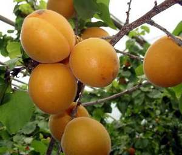杏
 李子
李子
 梅
梅
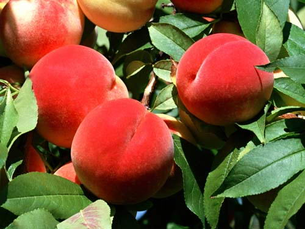桃子
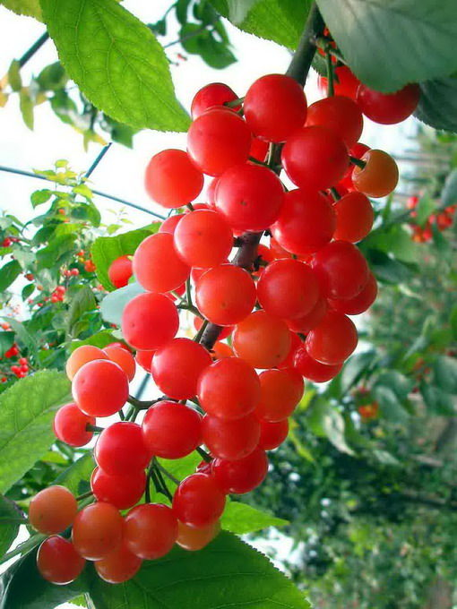樱桃
北方的春天
精灵们欢歌笑语
有一些精灵是这个季节最重要的角色之一
从它们开始，我认识了春天
从它们开始，我知道了热烈
从它们开始，我明白了珍惜
梅
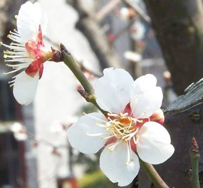
梅花是最早知道春天的精灵，先花后叶
花期（江南）1月中旬到2月下旬
梅树是小乔木，花朵疏单生于腋芽，花朵芳香
梅花花梗较短，花萼不外翻，花蕊长且浓密，花瓣近圆形。前端有裂
梅树不怎么耐寒，所以只分布在淮河以南
我的城市是无法种梅的
梅树生命很长是长寿树种
桃（果桃）
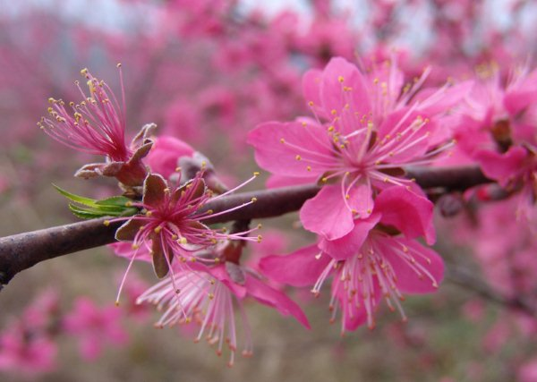
桃花（果桃）花色很多，多白色粉色，也有桃红色
我这里花期在3月中旬，持续一到两个星期
白色，粉色较早开放，红色少晚
桃树是小乔木，花朵单生或双生与叶腋，花朵有淡淡香气
花梗稍短，但是能明显看到花梗，花萼直立，花筒较长，花瓣长圆形或者披针形，前端有裂
桃树比较耐寒，树皮红润光亮，叶子披针形花将落时发出
桃树除高寒地带以外分布全国，桃树一般能活上百年
杏
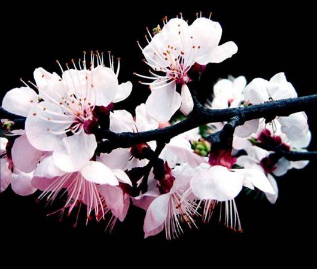
杏花稍晚于桃花，桃花谢则杏花开
我这里花期在3月下旬到4月上旬，一般花期在两个星期，先花后叶
杏树是大乔木 花朵簇生于叶腋，花朵仅有微弱香气
花梗很短，花筒扁圆，花萼外翻，花瓣圆形无前裂，花朵较小但是花朵非常密
杏树耐寒耐贫瘠，同样也很耐旱，很多荒山上都有很多野生的杏树
山里气温比较低，所以野生的山杏花要4月中旬才能开放
北方贫瘠的山巅，悬崖都有它的足迹
杏树树皮黑色，粗糙有纵裂纹，和梅树相仿
但是梅树嫩枝长且光滑，梅树树皮灰绿色
榆叶梅
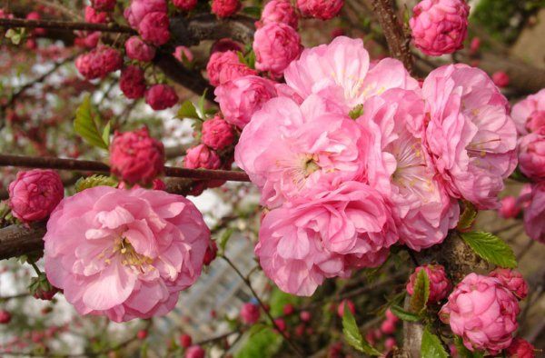
榆叶梅花朵大而无香气，在我这里花期在3月底到4月中旬。花将落时抽叶
榆梅是大灌木，花朵单生或簇，花梗细长且柔软，子房上位
花瓣圆形无前裂，花朵饱满，浓密花开十分，都无法看到枝条
榆叶梅原本是单瓣，由于观赏价值低所以几乎绝迹，偶然有退化出的单瓣植株
榆叶梅的枝条棕红色，生长扭曲虬劲
非常具有观赏的价值
李
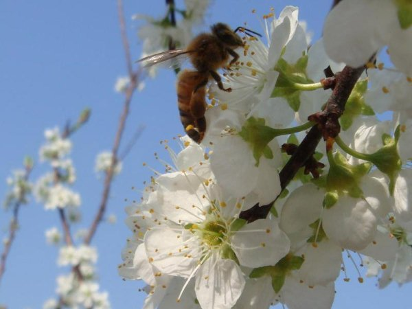
李很少用做观赏，花朵纯白色，花期在4月初到4月中旬，先花后叶
李树是小乔木 花朵簇生于叶腋，花梗长，花萼平翻，花有香气
花瓣圆形无前裂，花朵单薄，花朵相对稀疏
李花蜜腺丰富，是很好的蜜源植物
李树树皮棕黑，有深的纵裂纹
红叶李
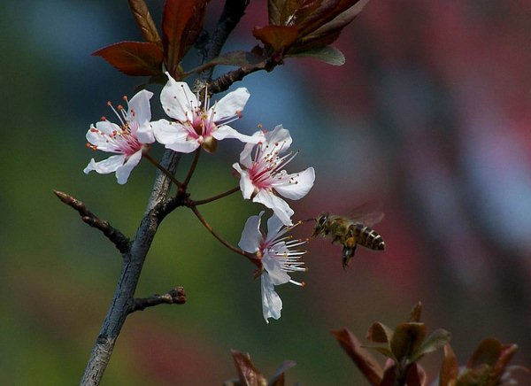
观赏树种，叫李却非李，和樱花更接近
叶片长圆或卵圆形，红色
花期在4月上中旬，花期长
红叶李，花小，白色，一般在一厘米左右，长花梗，柔软
花瓣长圆有前裂纹，花朵虽然簇生，但是花朵稀疏一般集中在枝梢
花叶同时，红色的叶片夹杂着白色小点的花朵很漂亮
红叶李只有嫁接种，大灌木
樱
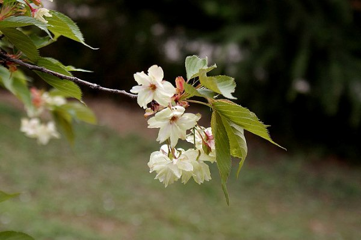
樱树是很漂亮的树种
树皮灰白且有横纹
樱树是小乔木，花期在4月中旬到5月初
花梗长且下垂，花萼平翻，花筒长子房下位
樱花花朵大且整齐，簇生于枝头，花梗长下垂，随风摇摆
花瓣长型，前断有裂，花期短，一般仅有四五天，观赏种也只有一个星期多点
花叶同时，由于花朵密集所以盛花时看不到叶片
樱树生命短暂，最长也只有50多年
所以樱花的短暂让它成为让人懂得珍惜的理解珍惜的象征
。。。
上面的精灵们都是蔷薇科
李属（桃属 樱桃属）植物
春天
是他们的舞台
。。。
蔷薇科李属中的樱、桃、杏梅、李、有“五花争春”之说。 花开季节，大家都不太分得清，但仔细观察，还是可以发现花型的不同。给大家介绍一下这五姐妹的区别吧，大家4号可以注意看哦！
先说说辨别要点：第一步先别看花，而是观察花萼下面有没有花柄。桃花、杏花、 梅花都没有花柄或是短柄，花朵看上去是紧紧贴在树枝上，而樱花、李花则有一到二厘米长的花柄，花朵能垂下来。第二步可以看花瓣，桃花、梅花、杏花的花瓣前 端都是圆形的，樱花有个小花缺，李花的花瓣单薄细小，前端有“锯齿”。颜色上，桃花颜色是深粉或白色，梅花花色是白色或水红，樱花也有红白两色，杏花含苞 时是纯红色，开花后颜色逐渐变淡，成纯白色。
再看看：杏树、梅树的树干比较粗糙，桃树的树干最好认，稍微老一点的树干就会分泌出一团团树脂出来，那是“桃胶”。从花叶来看，梅花、杏花、樱花都是先开花后长叶的。不过梅花最显著的特征是，开花时完全没有叶子，花落后才会长叶。樱花开花后期能见新叶。花瓣,桃花的比杏花的略细长一点。桃花开时枝端已有叶芽或嫩叶,而杏花开败了才发芽。
樱花 别名 中国樱花，山樱。科属 蔷蔽科，李属。观赏特性 落叶乔木，高10一25米，树皮栗褐色，平滑或有横裂皮孔。小枝褐色，光滑无毛。伞形或短总状花序，通常由3一6朵花组成，单花直径2一5厘米，每朵花均有一梗（小梗）。樱花每片花瓣边缘正中有个小缺口，近似心形。白色至粉红色，栽培的品种有深红、紫红、黄或淡绿等色;单瓣或重瓣;花萼的事筒钟形，兽片卵圆形。果实卵状球形，黑色，径约6一 8毫米，无明显腹缝沟。
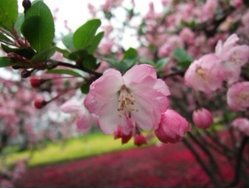
桃 科属 蔷蔽科，李属。观赏特性 落叶小乔木或大灌木，高约3一8米;树皮暗红褐色，平滑;树冠半球形;枝条平展或下垂，红褐色。侧芽常3个并生，中间为叶芽，两侧为花芽。叶片卵状披针形，花单生，先叶开放或与叶同放，粉红色，花梗短，花兽紫红色或绿色。果核椭圆形，有深沟纹和蜂窝状孔穴。
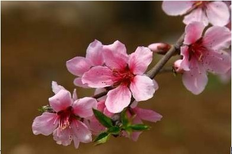
杏树 科属 蔷蔽科，李属。观赏特性 落叶乔木，高达10米;树冠圆整，开阔，圆球形或扁球形。小枝红褐色。叶片广卵形，先端短尖，基部圆形或近心形，锯齿细钝，两面无毛或仅背面有簇毛。花单生于一芽内，在枝侧2一3个集合在一起，展叶前开放,花形与桃花和梅花相仿,花梗极短。含苞时纯红色,开花后颜色逐渐变淡,花落时变成纯白色。杏花开放后，萼片会反卷。
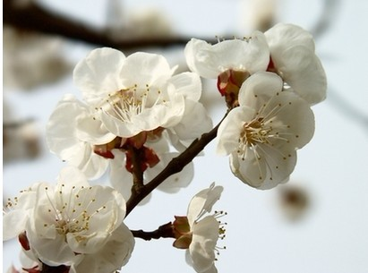
梅花 科属 蔷蔽科，李属。形态特征：落叶小乔木，株高约10m，常具枝刺，树冠呈不正圆头形。干呈褐紫色，多纵驳纹。小枝呈绿色。叶片广卵形至卵形，边缘具细锯齿。花每节1～2朵，无梗或具短梗，原种呈淡粉红或白色，栽培品种则有紫、红、彩斑至淡黄等花色，于早春先叶而开。
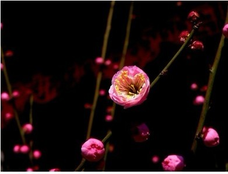
李花: 科别蔷薇科(Rosaceae)李属(PrunusL．) 别名 嘉应子。落叶小乔木。自古栽培。花白色，花期４月份。赏叶用之红叶李为樱桃李枝变种，花蕾时为淡红，开后变白；叶由暗红渐变暗紫色，为常见观叶树。李叶为椭圆形，边缘有大的锯齿，叶片、叶柄都呈暗红色。现在南京路边用得最多的是“紫叶李”。
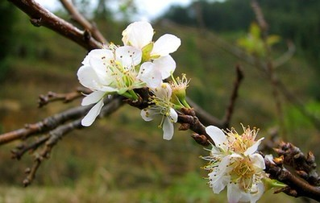
梨花：梨花是一簇多花，二是梨花的花芯是红褐色的
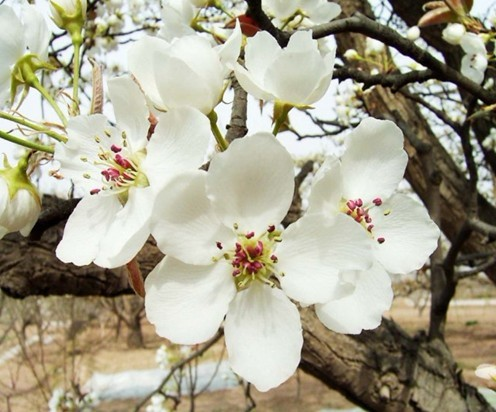
那么按开花时间顺序开始：
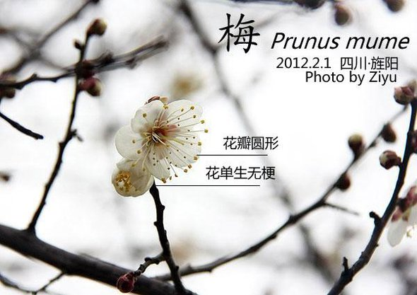
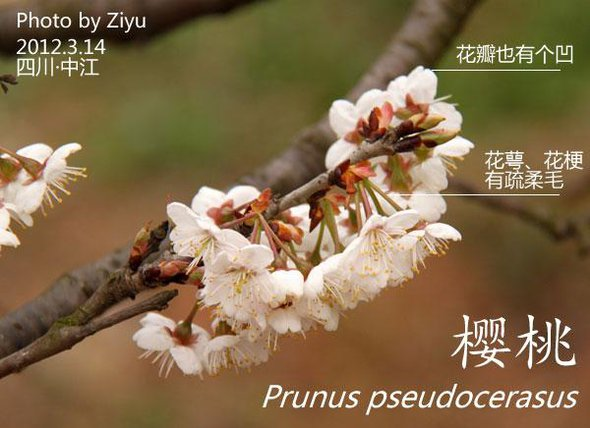
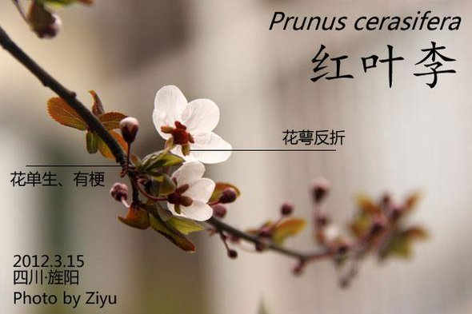
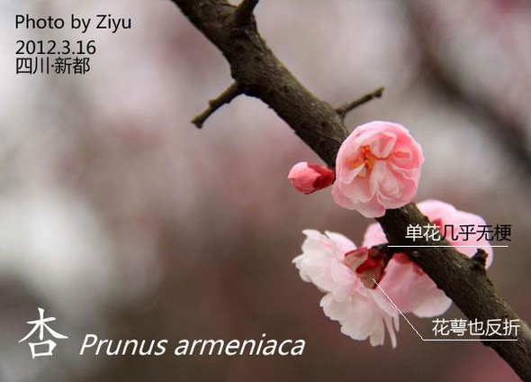
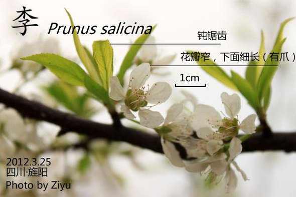
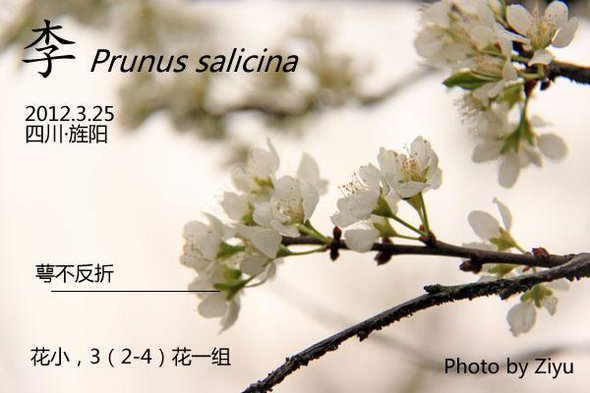
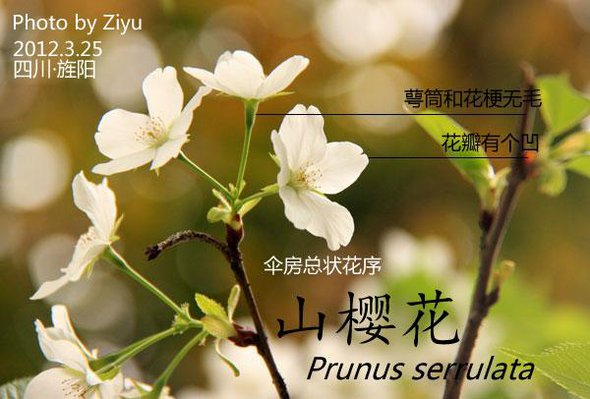
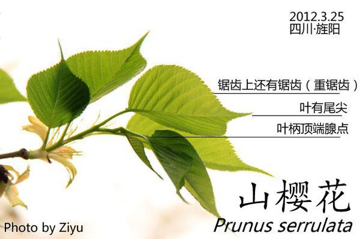
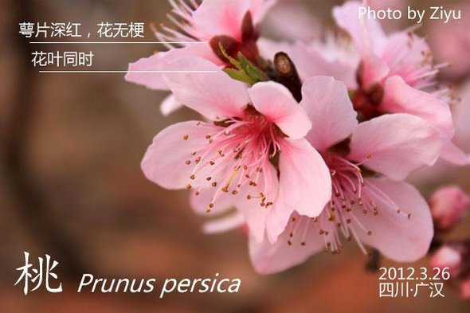
不过梅亚科和蔷薇科早春另一大亚科梨亚科（各种海棠在此）相比，花的正面区别还是蛮大的……雌蕊（花中间的那个变成果实的花蕊）在梅亚科里只有一条花柱，并且子房上位，就是花托不参与形成那个核果……
而梨亚科的雌蕊都不单纯，而且子房下位，花托参与形成梨果，所以梨或苹果的核都是里面有好几个室的。而这在花外观的表现就是雌蕊上的花柱不止一个……
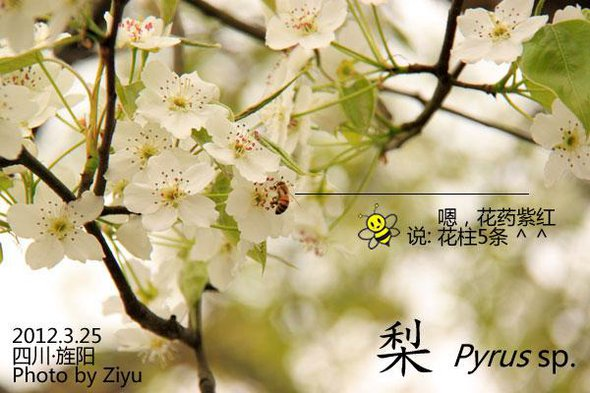
最近拍花,对几种花搞不拧清,今查资料,供各位参考.
蔷薇科李属中的樱、杏、梅、李、桃有“五花争春”之说，是春季重要的花灌木。这五种植物可从以下几点进行区分：
枝：梅之小枝（1年生）常呈绿色或底色为绿色，其余均带红褐色。
叶：桃叶为长披针形；李叶为倒披针形。梅、杏之叶类似，皆为卵形。但杏叶较阔而顶端突短尖，多两面无毛；梅叶则顶端长渐尖，幼时两面多毛，后无毛或下面有毛。樱之叶，则多为卵状椭圆形，先端突渐尖。
花：李花具长柄，通常每3朵聚成一丛（伞房花序），每朵花均有一梗（小梗）。樱的种类甚多，均成为花序。花色有血、粉、红、紫等。梅、杏、桃则花梗甚短或几乎无梗；尤其是梅，就像是贴在花枝上开放一般。
果：五种植物均为核果，且多为具1个硬核（内果皮）的肉质果，由单心皮发育而成，外果皮薄，中果皮肉质或纤维质。除樱桃外，表面一侧均是一条果沟。李果有紫、黄两类，果皮被白粉，但无毛。桃果表面除油桃外，均密被绒毛。杏果与梅果极为相似；而最大的关键性区别在于：梅核表面密布小凹点，而杏核表面则无小凹点。
梅花、桃花、杏花、樱花、梨花、李花的区别。
蔷薇科李属中的樱、杏、梅、李、桃有“五花争春”之说，是春季主要观花花木，但是如果我们单从花型上来识别是很难区分，应该全面观察各自的形态特征，下面图片对比一下，应该有所不同。
先花后叶：梅花、桃花、杏花，就是说先开花，后长叶。桃花、梅花、杏花都无花柄。
杏花： 大多成簇状开放，一簇挤在一起的，花瓣大多单数5瓣，花蕊比较长；
桃花、梅花的区别：有硬硬的5瓣的就是梅花； 梅花的“蜡”质感很强，桃花的“纸”质感很强，简单说就是梅花花瓣比较硬，桃花花瓣比较软。
先叶后花：樱花、梨花、李花，就是说先张叶，后开花。樱花、梨花、李花都有花柄。
樱花：红色、白色。
梨花、李花都是白花。梨花与李花相比，花蕊整齐集中，花瓣有韧性；与白樱花相比，也是花蕊整齐集中，另外樱花花瓣尖有花缺，梨花花瓣比较圆，偶有花缺也不在尖上。
李花最主要特点就是花很细小，花瓣很薄，白色，与梨花相比，一是小，二是花蕊扩散，花瓣薄。